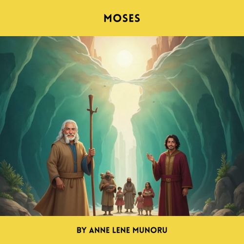

Daniel and the Den of Lions
€9.99
The Book of Daniel recounts the story of Daniel, a Jewish exile in Babylon, who remains faithful to God despite facing persecution. A key event is when Daniel is thrown into a den of lions for continuing to pray to God, in defiance of a royal decree forbidding prayer to anyone but king Nebuchadnezzer. God miraculously protects Daniel by sending an angel to shut the lions' mouths. This event leads the king to acknowledge God's power and issue a decree honoring Him.

Moses the Great Deliverer
€9.99
The biblical story of Moses recounts the life of a Hebrew prophet who led the Israelites out of slavery in Egypt. Born during a time when the Pharaoh feared the growing Israelite population and ordered the killing of all newborn Hebrew boys, Moses' mother hid him in a basket among the reeds of the Nile. Pharaoh's daughter found and adopted him, raising him in the Egyptian royal court. Later, after fleeing Egypt for killing an Egyptian, Moses encountered God in a burning bush who commanded him to return and demand the Israelites' freedom. Despite initial reluctance due to a speech impediment, Moses, with the help of his brother Aaron, confronted Pharaoh. After a series of plagues inflicted upon Egypt, Pharaoh finally relented, and the Israelites embarked on their exodus.

David and Goliath
€9.99
The biblical story of David and Goliath tells of a battle between the Israelites and the Philistines, where a young shepherd named David defeats the Philistine giant, Goliath. Goliath, a formidable warrior, challenges the Israelites to send a champion to fight him, but their soldiers are terrified. David, despite his youth and lack of military experience, volunteers, armed only with a sling and stones. He successfully hits Goliath in the forehead with a stone, causing the giant to fall, and then slays him with Goliath's own sword.
Noah and the Great Flood
€9.99
The Bible story of Noah's Ark tells how God, saddened by humanity's wickedness, decided to send a great flood to destroy all living creatures. However, God chose Noah, a righteous man, to be saved. He instructed Noah to build a massive ark, take his family and two of every animal on board, to preserve life. After 40 days and nights of torrential rain, the floodwaters covered the earth. The ark floated for many months, eventually coming to rest on Mount Ararat. After the floodwaters receded, Noah sent out a dove which returned with an olive branch, signaling the return of dry land. Noah, his family, and the animals then disembarked, and God established a covenant with Noah, symbolized by a rainbow, promising never to destroy the world with a flood again.
Hannah
€9.99
Hannah, wife to Elkanah was unable to conceive. Peninah, her co-wife tormented her. During a visit to the temple, she prayed fervently to God for a son, promising to dedicate him to the Lord's service if granted her wish. God answered her prayer, and she gave birth to Samuel. Following through on her vow, Hannah brought the young Samuel to the temple to serve under the priest Eli. The story highlights Hannah's faith, her willingness to sacrifice, and God's power to answer prayer.

Esther, Queen of Persia
€9.99
Esther became queen of Persia after King Ahasuerus (also known as Xerxes) deposed his queen, Vashti, and held a beauty pageant to find a replacement. Esther, an orphaned Jewish woman raised by her cousin Mordecai, was chosen due to her beauty and favor with the king. Mordecai, who worked at the palace, had advised Esther to keep her Jewish identity a secret. Ultimately, Esther's courage and wisdom in revealing her heritage and exposing a plot against the Jews led to her becoming queen and saving her people.